ClinicusMed · Dossiê Clinicus — Padrão de Excelência
Pense no membro inferior como três tubos empilhados (coxa, perna e pé), e em cada tubo os músculos se agrupam em compartimentos, cada um com um nervo e uma função em comum. Quem aprende essa regra memoriza dezenas de músculos de uma vez.
| Segmento | Compartimento | Função geral | Nervo |
|---|---|---|---|
| Coxa | Anterior | Extensão do joelho (e flexão do quadril) | Femoral (L2–L4) |
| Medial | Adução do quadril | Obturatório (L2–L4) | |
| Posterior | Extensão do quadril e flexão do joelho | Isquiático (parte tibial; a cabeça curta do bíceps vai pelo fibular comum) | |
| Perna | Anterior | Dorsiflexão e extensão dos dedos | Fibular profundo (L4–S1) |
| Lateral | Eversão do pé | Fibular superficial (L5–S1) | |
| Posterior (superficial e profundo) | Flexão plantar, inversão e flexão dos dedos | Tibial (L4–S3) | |
| Pé | Dorsal · plantar | Movimentos finos dos dedos e sustentação do arco | Fibular profundo (dorso) · plantar medial e lateral (ramos do tibial) |
Segundo a aula, a região femoral tem 10 músculos principais, mais o tensor da fáscia lata. Eles se dividem por posição: anterior = extensor, posterior = flexor, medial = adutores. As exceções que a professora destaca:
| Exceção | Onde fica | O que faz |
|---|---|---|
| Sartório | Anterior | É flexor (não extensor) |
| Grácil | Medial | É flexor (do joelho), além de aduzir |
| Aspecto | Descrição |
|---|---|
| Forma | Longo e em fita (“acintado”); é o músculo mais longo do corpo |
| Trajeto | De cima para baixo e de lateral para medial, cruzando a coxa em diagonal |
| Origem | Espinha ilíaca anterossuperior (EIAS) |
| Inserção | Face medial da parte superior da tíbia, formando a pata de ganso (junto com grácil e semitendinoso) |
| Ação | Flexiona, abduz e roda lateralmente o quadril; flexiona o joelho e roda medialmente a perna fletida (posição de sentar “de alfaiate”) |
| Inervação | Nervo femoral |
É o mais potente dos extensores da perna sobre a coxa. Tem quatro cabeças:
| Cabeça | Origem |
|---|---|
| Reto femoral | Espinha ilíaca anteroinferior (EIAI) e teto do acetábulo; único que cruza o quadril (também flexiona o quadril) |
| Vasto medial | Linha intertrocantérica e lábio medial da linha áspera (fibras distais “oblíquas” estabilizam a patela) |
| Vasto intermédio | Faces anterior e lateral do fêmur; fica sob o reto femoral |
| Vasto lateral | Trocânter maior e lábio lateral da linha áspera; é o maior das quatro cabeças |
| Aspecto | Descrição |
|---|---|
| Inserção (aula) | Superior: coxal e fêmur · inferior: patela |
| Inserção real | As quatro cabeças formam o tendão do quadríceps, que envolve a patela; da patela segue o ligamento patelar até a tuberosidade da tíbia |
| Ação | Extensão do joelho; o reto femoral ainda flexiona o quadril |
| Inervação | Nervo femoral (L2–L4) |
Cinco músculos: grácil, pectíneo, adutor longo, adutor curto e adutor magno. Todos nascem no púbis/ísquio e descem para o fêmur (exceto o grácil, que vai à tíbia).
| Músculo | Origem | Inserção | Inervação |
|---|---|---|---|
| Grácil (reto interno) | Corpo e ramo inferior do púbis | Face medial da tíbia (pata de ganso) | Obturatório |
| Pectíneo | Crista pectínea do púbis (ramo superior) | Linha pectínea do fêmur | Femoral (e obturatório, em parte) |
| Adutor longo (mediano) | Corpo do púbis, abaixo do tubérculo púbico | Terço médio da linha áspera | Obturatório (ramo anterior) |
| Adutor curto (menor) | Corpo e ramo inferior do púbis | Linha pectínea e parte proximal da linha áspera | Obturatório |
| Adutor magno | Ramo inferior do púbis, ramo do ísquio e tuberosidade isquiática | Linha áspera, linha supracondilar medial e tubérculo adutor | Obturatório (parte adutora) + tibial (parte isquiocondilar) |
Três músculos que nascem na tuberosidade isquiática, cruzam o quadril e o joelho, e por isso estendem o quadril e flexionam o joelho.
| Músculo | Origem | Inserção | Particularidade |
|---|---|---|---|
| Bíceps femoral | Cabeça longa: tuberosidade isquiática · cabeça curta: linha áspera (lábio lateral) | Cabeça da fíbula | Cabeça longa: nervo tibial · cabeça curta: fibular comum. Forma o limite superolateral da fossa poplítea |
| Semitendinoso | Tuberosidade isquiática | Face medial da tíbia (pata de ganso) | Carnoso em cima e tendíneo embaixo (tendão longo) |
| Semimembranoso | Tuberosidade isquiática (tendão em forma de membrana) | Côndilo medial da tíbia (face posterior) | Tendão superior membranoso; carnoso embaixo |
| Parte (aula) | O que é |
|---|---|
| Fáscia | Manguito que envolve a coxa; é mais espessa lateralmente, formando o trato iliotibial (faixa de Maissiat), que desce até o tubérculo de Gerdy da tíbia. Desdobra-se para envolver o tensor da fáscia lata e o sartório |
| Septos intermusculares | Duas lâminas que a fáscia emite em profundidade (lateral e medial), mais resistentes embaixo que em cima; separam os três compartimentos da coxa |
| Bainha dos vasos femorais | No trígono de Scarpa, a fáscia lata passa à frente dos vasos femorais |
| Espaço | Limites | Conteúdo |
|---|---|---|
| Trígono femoral (de Scarpa) | Base: ligamento inguinal · lateral: sartório · medial: adutor longo · assoalho: iliopsoas (lateral) e pectíneo (medial) | De lateral para medial: Nervo femoral, Artéria femoral, Veia femoral, Espaço (canal femoral) e Linfáticos (NAVEL). O nervo fica fora da bainha femoral |
| Canal dos adutores (de Hunter) | Do ápice do trígono ao hiato dos adutores · anterolateral: vasto medial · posterior: adutor longo e magno · teto: sartório e lâmina fibrosa | Artéria e veia femorais, nervo safeno e nervo do vasto medial |
| Fossa poplítea | Superolateral: bíceps femoral · superomedial: semimembranoso/semitendinoso · inferolateral e inferomedial: cabeças lateral e medial do gastrocnêmio · assoalho: face poplítea do fêmur, ligamento poplíteo oblíquo e músculo poplíteo | De superficial para profundo: nervo tibial, veia poplítea, artéria poplítea; o fibular comum corre junto ao tendão do bíceps |
| Músculo | Origem | Inserção | Ação | Nervo |
|---|---|---|---|---|
| Glúteo máximo | Ílio (atrás da linha glútea posterior), sacro, cóccix e ligamento sacrotuberal | Trato iliotibial (3/4) e tuberosidade glútea | Extensão e rotação lateral do quadril; levantar da cadeira, subir escada | Glúteo inferior (L5–S2) |
| Glúteo médio | Ílio entre as linhas glúteas anterior e posterior | Face lateral do trocânter maior | Abdução e estabilização da pelve na marcha | Glúteo superior (L4–S1) |
| Glúteo mínimo | Ílio entre as linhas glúteas anterior e inferior | Face anterior do trocânter maior | Abdução e rotação medial | Glúteo superior |
| Tensor da fáscia lata | EIAS e crista ilíaca anterior | Trato iliotibial | Tensiona o trato, abduz e flexiona o quadril | Glúteo superior |
| Piriforme | Face pélvica do sacro (S2–S4) | Ápice do trocânter maior | Rotação lateral; marco do forame isquiático maior | Ramos de S1–S2 |
| Obturador interno + gêmeos | Membrana obturadora e margem do forame; espinha e túber isquiático | Fossa trocantérica | Rotação lateral; passam pelo forame isquiático menor | N. do obturador interno · n. do quadrado femoral |
| Quadrado femoral | Túber isquiático | Crista intertrocantérica | Rotação lateral e adução | N. do quadrado femoral |
| Obturador externo | Face externa da membrana obturadora | Fossa trocantérica | Rotação lateral | Obturatório |
| Iliopsoas | Fossa ilíaca e vértebras T12–L5 | Trocânter menor | Principal flexor do quadril | Femoral (ilíaco) e ramos L1–L3 (psoas) |
A perna é dividida pela tíbia, pela fíbula, pela membrana interóssea e pelos septos intermusculares em quatro compartimentos.
| Compartimento | Músculos | Nervo |
|---|---|---|
| Anterior (flexores dorsais) | Tibial anterior, extensor longo dos dedos, extensor longo do hálux, fibular terceiro | Fibular profundo |
| Lateral | Fibular longo, fibular curto | Fibular superficial |
| Posterior superficial | Gastrocnêmio, sóleo, plantar (o gastrocnêmio e o sóleo formam o tríceps sural) | Tibial |
| Posterior profundo | Poplíteo, tibial posterior, flexor longo dos dedos, flexor longo do hálux | Tibial |
| Músculo | Origem | Inserção | Ação |
|---|---|---|---|
| Tibial anterior | Côndilo lateral e metade proximal da face lateral da tíbia; membrana interóssea | Cuneiforme medial e base do I metatarsal | Dorsiflexão e inversão do pé |
| Extensor longo dos dedos | Côndilo lateral da tíbia e face medial da fíbula | Falanges média e distal dos dedos II–V (“4 últimos dedos”) | Extensão dos dedos II–V e dorsiflexão |
| Extensor longo do hálux | Terço médio da fíbula (face medial) e membrana interóssea | Falange distal do hálux | Extensão do hálux e dorsiflexão |
| Fibular terceiro (peroneo anterior) | Terço distal da fíbula | Base do V metatarsal | Dorsiflexão e eversão. Inconstante |
| Músculo | Origem | Inserção | Particularidade |
|---|---|---|---|
| Fibular longo | Cabeça e 2/3 proximais da fíbula | Cuneiforme medial e base do I metatarsal | É o músculo mais lateral e superficial; o tendão passa sob o pé pelo sulco do cuboide, sustentando o arco transverso |
| Fibular curto | 2/3 distais da fíbula (face lateral) | Tuberosidade do V metatarsal | Mais profundo e curto. O tendão dá volta atrás do maléolo lateral |
| Músculo | Origem | Inserção | Particularidade |
|---|---|---|---|
| Gastrocnêmio (gêmeos) | Duas cabeças: medial e lateral, nos côndilos do fêmur | Tendão calcâneo (de Aquiles) | Cruza o joelho e o tornozelo: flete o joelho e faz flexão plantar |
| Sóleo | Cabeça e quarto superior da fíbula, linha do sóleo da tíbia, arco tendíneo do sóleo | Tendão calcâneo | Mais profundo; só atua no tornozelo; é a “bomba” venosa da panturrilha |
| Plantar | Côndilo lateral do fêmur | Calcâneo (ou tendão calcâneo) | Rudimentar, satélite da cabeça lateral do gastrocnêmio; tendão longo e fino |
| Músculo | Origem | Inserção | Ação |
|---|---|---|---|
| Poplíteo | Côndilo lateral do fêmur (tendão dentro da cápsula) | Face posterior da tíbia, acima da linha do sóleo | “Destrava” o joelho (flexão inicial e rotação) |
| Tibial posterior | Membrana interóssea e faces posteriores da tíbia e da fíbula | Tuberosidade do navicular e demais ossos do tarso | Inversão e flexão plantar; sustenta o arco longitudinal medial |
| Flexor longo dos dedos (flexor tibial de Testut) | Face posterior da tíbia (medial) | Falanges distais dos dedos II–V | Flete os 4 últimos dedos |
| Flexor longo do hálux (flexor fibular de Testut) | Face posterior da fíbula (lateral) | Falange distal do hálux | Flete o hálux; o tendão passa sob o sustentáculo do tálus |
| Região | Músculos | Nervo |
|---|---|---|
| Dorsal | Extensor curto dos dedos e extensor curto do hálux (juntos, o pedioso) | Fibular profundo |
| Plantar medial | Abdutor do hálux, flexor curto do hálux, adutor do hálux | Plantar medial (abdutor e flexor curto) · plantar lateral (adutor) |
| Plantar lateral | Abdutor do dedo mínimo (V), flexor curto do V dedo, oponente do V dedo (inconstante) | Plantar lateral |
| Plantar média | Flexor curto dos dedos, quadrado plantar (flexor acessório ou de Silvio), lumbricais, interósseos | Plantar medial (flexor curto dos dedos e 1º lumbrical) · plantar lateral (demais) |
| Nervo | Raízes | Músculos | Déficit se lesado |
|---|---|---|---|
| Femoral | L2–L4 | Iliopsoas (parte), sartório, pectíneo, quadríceps | Perda da extensão do joelho; reflexo patelar abolido |
| Obturatório | L2–L4 | Grácil, adutores longo e curto, obturador externo, parte do adutor magno | Fraqueza de adução; dificuldade de cruzar as pernas |
| Glúteo superior | L4–S1 | Glúteos médio e mínimo, tensor da fáscia lata | Marcha de Trendelenburg |
| Glúteo inferior | L5–S2 | Glúteo máximo | Dificuldade de levantar da cadeira e subir escadas |
| Isquiático | L4–S3 | Isquiotibiais, parte isquiocondilar do adutor magno; divide-se em tibial e fibular comum | Perda da flexão do joelho e de todos os músculos da perna e do pé |
| Tibial | L4–S3 | Compartimento posterior da perna e planta do pé | Sem flexão plantar nem inversão; “pé em calcanhar” |
| Fibular comum → profundo e superficial | L4–S2 | Anterior (profundo) e lateral (superficial) da perna; dorso do pé | Pé caído, marcha escarvante |
A aula termina com um panorama das articulações do membro inferior. O assunto detalhado costuma ficar no capítulo de artrologia, mas estes pontos de prova resumem as páginas 41 a 51.
| Articulação | Une | Tipo |
|---|---|---|
| Sacroilíaca | Sacro e ílio | Plana (sinovial), pouco móvel |
| Sínfise púbica | Os dois ossos do quadril na linha mediana | Cartilagínea (sínfise), quase sem movimento |
| Coxofemoral (quadril) | Osso do quadril e fêmur | Sinovial esferóidea, ampla mobilidade |
| Joelho | Fêmur, tíbia e patela | Femorotibial (bicondilar) + femoropatelar (troclear) |
| Tibiofibular proximal | Tíbia e fíbula (extremidade superior) | Sinovial plana |
| Sindesmose tibiofibular | Tíbia e fíbula (extremidade inferior) | Fibrosa (sindesmose) |
| Talocrural (tornozelo) | Tíbia, fíbula e tálus | Gínglimo (troclear): móvel e sólida |
| Do pé | Tarsais (subtalar, transversa do tarso), tarsometatarsais, metatarsofalângicas e interfalângicas | Sinoviais |
Figuras dos slides da Dra. Jasinta Vázquez / Dra. Liz, organizadas pelas seções do capítulo. Clique para ampliar.
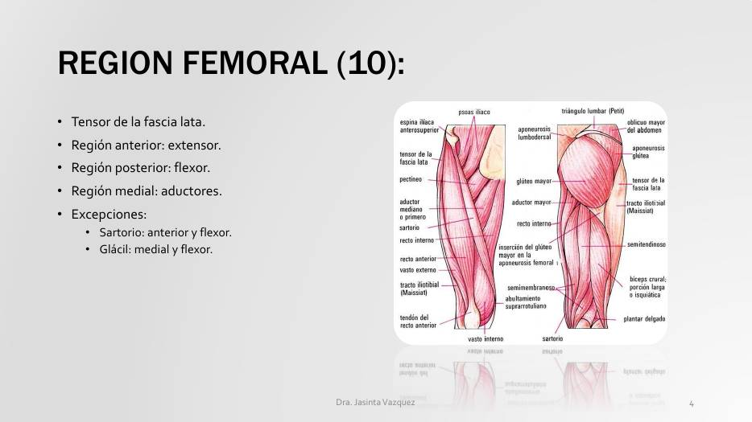
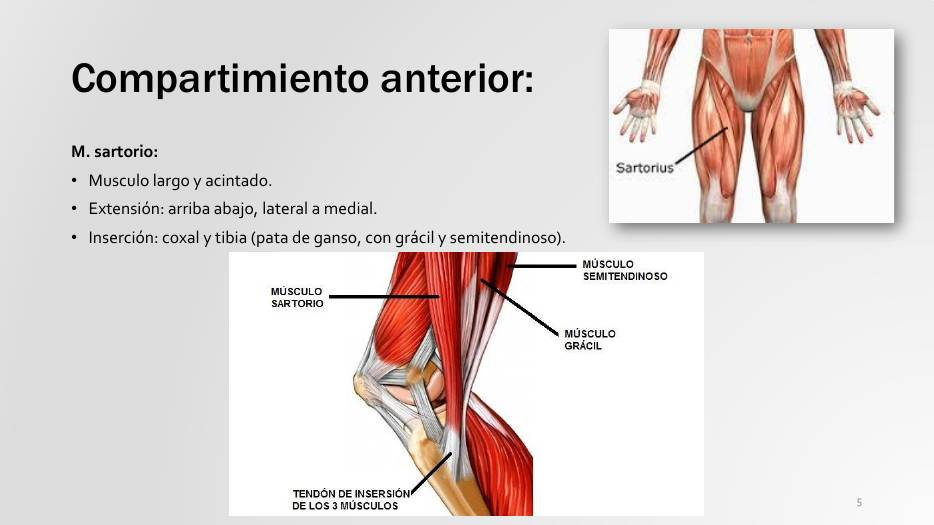
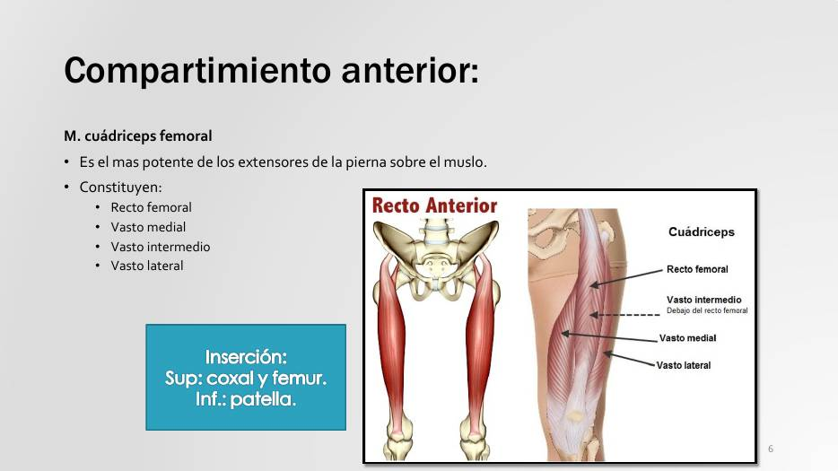
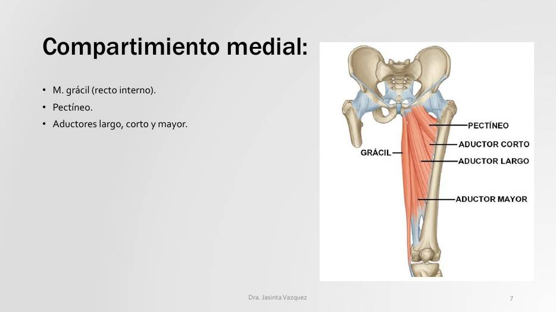
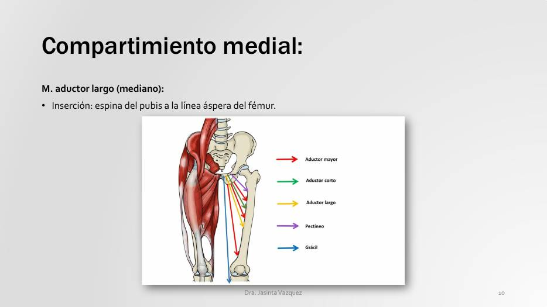
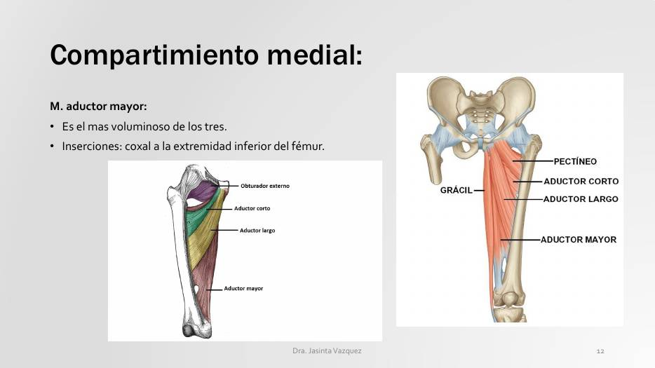
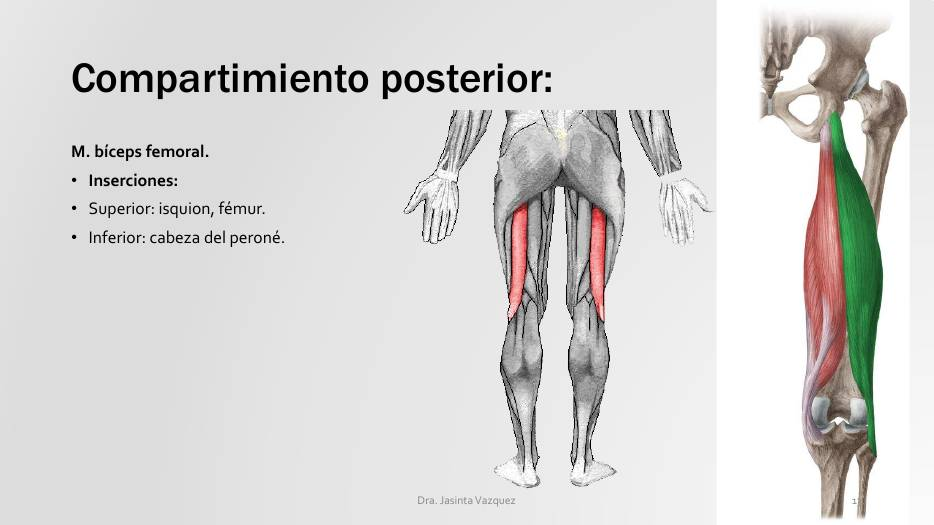
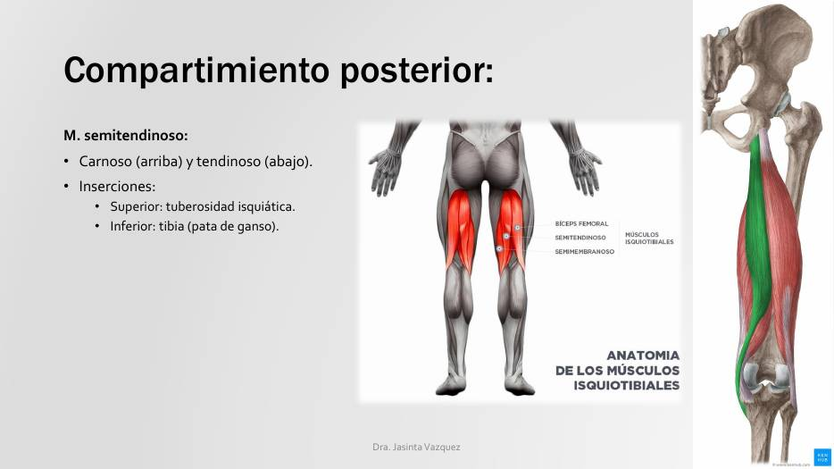
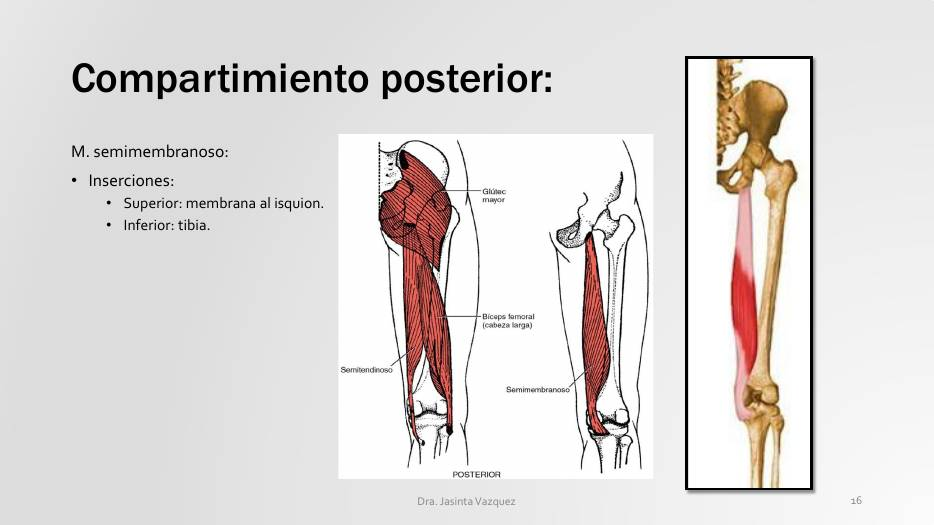
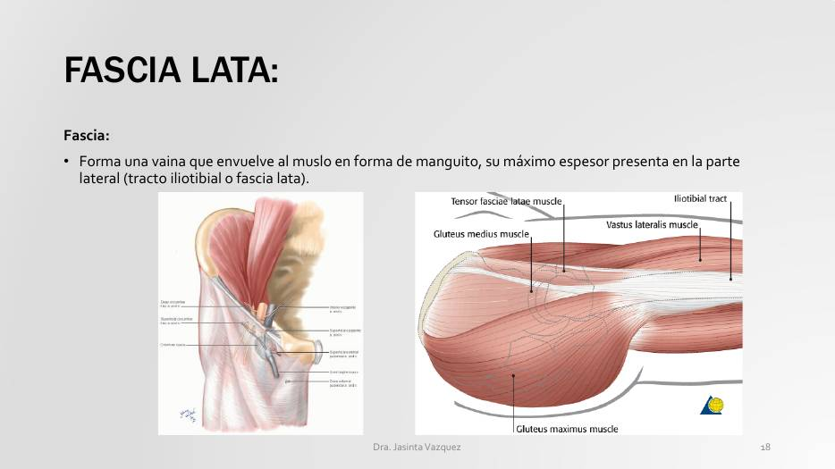
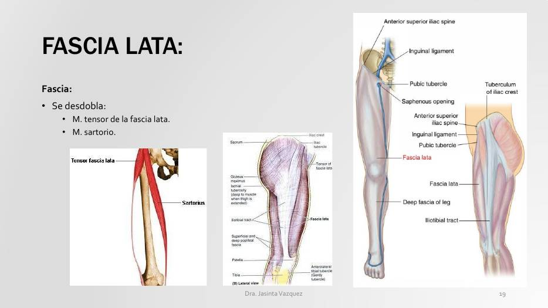
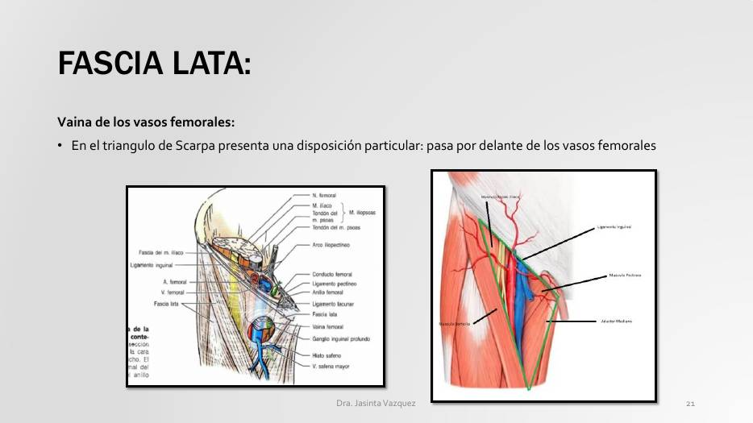
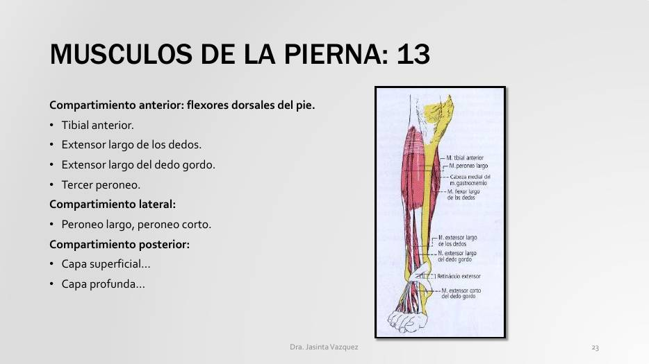
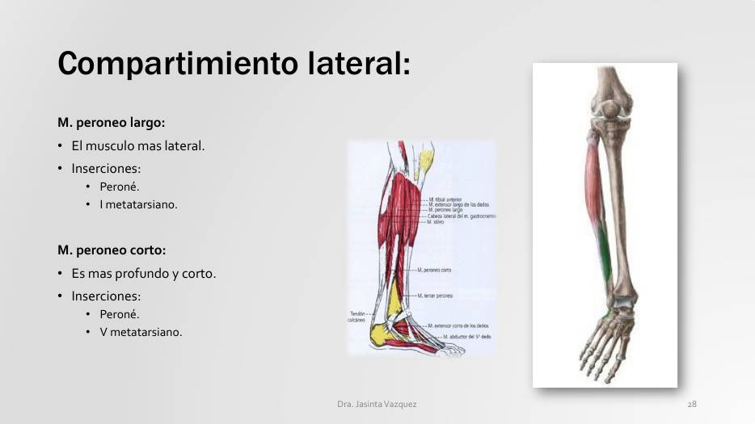
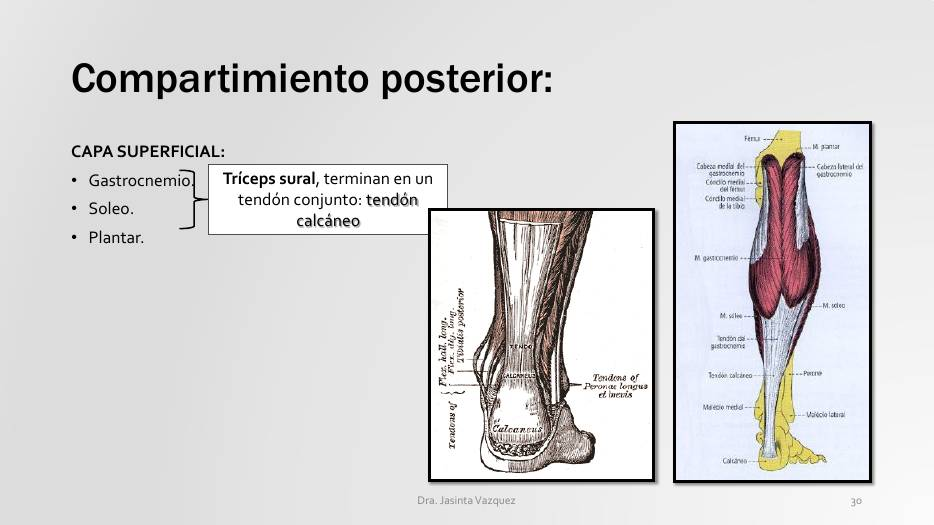
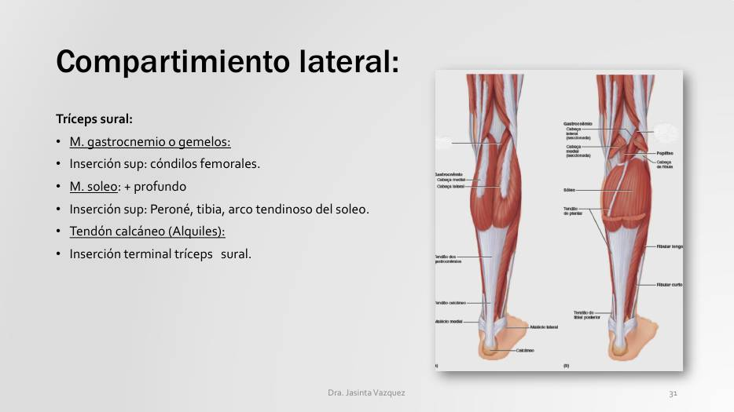
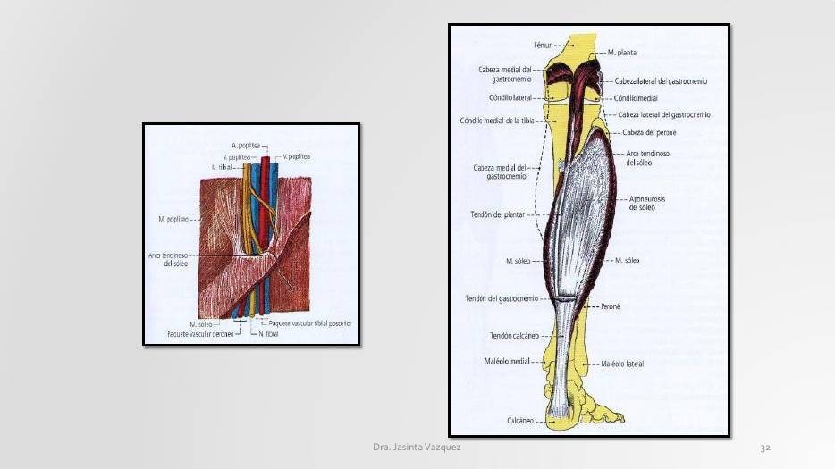
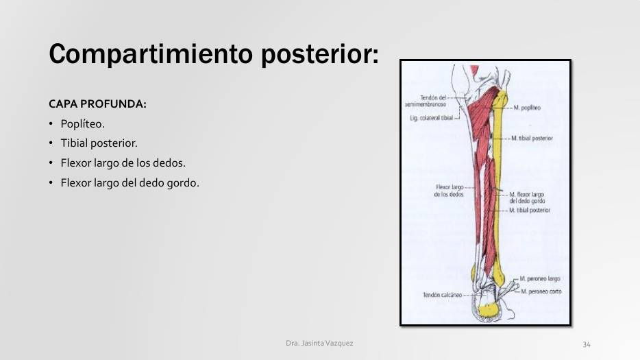
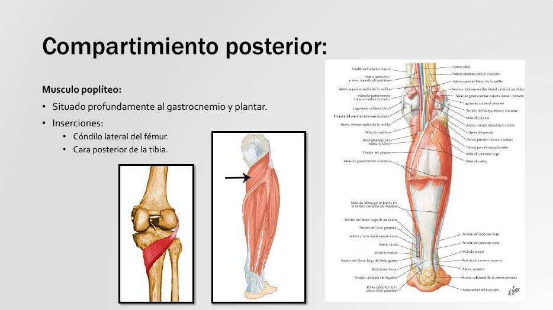
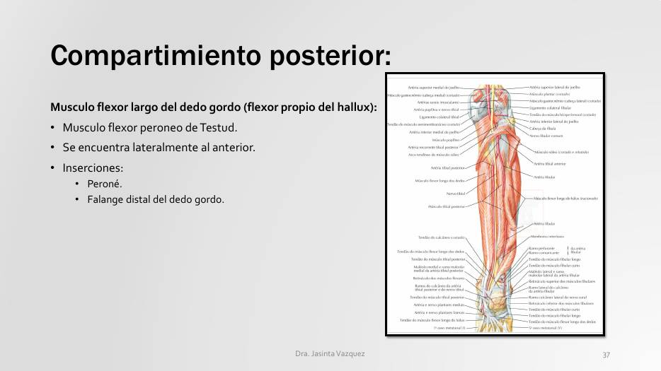
Três casos em níveis crescentes que mostram como compartimentos e nervos explicam o déficit motor de cada lesão do membro inferior.
A Clinicus selecionou este conteúdo para complementar seu estudo. Não substitui a leitura do resumo — o resumo ensina, o vídeo reforça.
Carregando recomendações...
O sistema guarda, no seu navegador, quais cards você já sabe bem e quais precisam voltar mais cedo — cada vez que você avalia um card, ele recalcula quando ele deve voltar.
12 questões, do mais básico ao mais puxado. Escolhe uma alternativa, depois clica em "Ver comentário completo" — vale a pena ler até quando você acerta, porque o comentário explica cada alternativa, não só a certa.